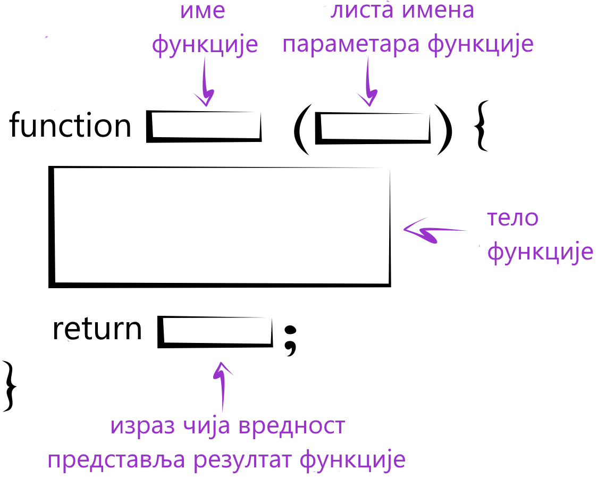
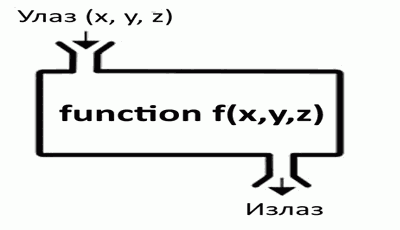

Функције¶
У програмима који решавају сложеније проблеме, групу наредби које решавају неки подзадатак можемо да издвојимо у целину која се зове функција. Функција има своје име и позивом функције по имену се извршавају наредбе у тој функцији.
У језику JavaScript се функције креирају тако што се иза имена функције у облим задградама наведе листа параметара, а затим у витичастим заградама скуп наредби које треба извршити када се та функција позове.
Параметри су вредности које можемо да пошаљемо функцији када је позовемо. Функција на основу параметара може (а не мора) да врати неки резултат помоћу наредбе return. У следећих пар примера ћемо видети како се пишу и позивају функције које враћају резултат:

{kind=link}
Пример - сложено кретање 1
Позната је брзина тела у појединим тренуцима:
- у тренутку \(t_0 = 0 s\), брзина је била \(V_0 = 2 {m \over s}\)
- у тренутку \(t_1 = 4 s\), брзина је била \(V_1 = 11 {m \over s}\)
- у тренутку \(t_2 = 11 s\), брзина је била \(V_2 = 13 {m \over s}\)
- у тренутку \(t_3 = 14 s\), брзина је била \(V_3 = 5 {m \over s}\)
Написати програм који израчунава пут који је ово тело прешло, претпостављајући да се брзина између контролних тачака мењала равномерно.
Уз нешто знања физике не би требало да буде тешко да се разуме дато решење:
Када је поребно да функција врати више од једног резултата, те резултате можемо да наведемо у угластим заградама (као низ). Променљиве које примају враћене вредности на месту позива функције такође наводимо у угластим заградама.
Пример - сложено кретање 2
Тело које је на почетку у мировању, креће се све време у истом смеру на следећи начин:
- најпре 3 секунде равномерно убрзава убрзањем од \(2 {m \over s^2}\);
- затим се креће сталном брзином током наредних 10 секунди;
- на крају равномерно успорава убрзањем од \(-6 {m \over s^2}\) до заустављања.
Написати програм који израчунава пут који је ово тело прешло.
Функције у претходним примерима на основу датих параметара израчунавају неки резултат и враћају га на место позива:
{kind=link}
Функција, међутим, може да буде и без параметара, а у том случају се после имена функције пишу само обле заграде. Такође, функција не мора ни да врати резултат. У следећем примеру се појављује функција која нема параметре и не враћа резултат (функције које не враћају резултат се понекад називају процедуре).
Пример - време отварања веб странице
Направити веб страницу, која по отварању јавља у колико сати је отворена.
Једно могуће решење је:
У случају да функција нема у себи наредбу return, или ако би у њој писало само return; без вредности која се враћа, позив функције пишемо као наредбу
prikaziTacnoVreme();
Ако бисмо „вредност” такве функције грешком доделили некој променљивој
let x = prikaziTacnoVreme();
променљива x би добила вредност undefined.